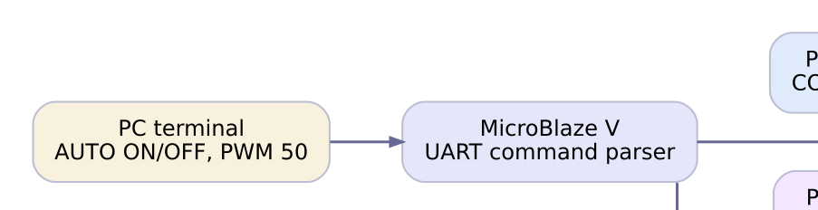
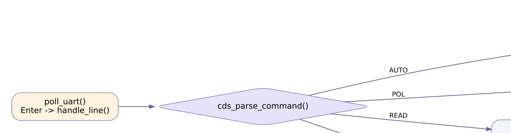

완성 후 동작
CdS(씨디에스, 황화카드뮴) 디지털 조도센서 모듈의 DO 출력으로 LED1 PWM 밝기의 자동 허용·차단을 제어한다. 센서의 임계값 판단은 외부 비교기 모듈에서, 안정화와 자동 제어는 FPGA RTL에서 처리한다.
| UART 명령 | 기대 동작 | 유지할 기능 |
|---|---|---|
PWM 50 | LED1 PWM 듀티 설정 50% (04장 기능) | 05장 AUTO가 ON이면 어두움에 한해 출력 |
AUTO ON | 필터링된 CdS 어두움 상태로 LED1 출력 게이트 | PWM 설정은 변경하지 않음 |
AUTO OFF | 센서 무시, 기존 PWM 출력 통과 | 04장 동작과 동일 |
CDS READ | RAW/DARK/VALID/GATE/AUTO/POL 실측 상태 UART 출력 | 등록된 센서 입력 상태 확인 |
CDS POL LOW | 디지털 DO=0을 어두움으로 해석 | 안정화 필터 재적용 |
CDS POL HIGH | 디지털 DO=1을 어두움으로 해석 | 안정화 필터 재적용 |
STATUS | 01~04장 정보 + 05장 센서 상태 | 누적 상태 표시 |
LED ON/OFF, DISP 0050 | LED0 제어 및 FND 표시 | 01~03장 명령 보존 |
MicroBlaze V · AXI · CdS · PWM · LED1


MicroBlaze V는 명령 문자열을 해석하고 AXI4-Lite(에이엑스아이 포 라이트, 메모리 매핑 주변장치 버스)로 모드·극성을 설정한다. cds_digital_core는 CPU 없이 2FF 동기화와 안정값 판정을 수행한다. auto_light_controller는 LED1 단일 출력 소유자다.
CdS 디지털 센서와 JA1 배선
| 모듈 | Basys3 연결 | 사전 조건 |
|---|---|---|
VCC | 3.3 V 공급 | 실제 센서 모듈이 3.3 V에서 동작하는지 확인 |
GND | 공통 GND | 보드와 모듈 접지 연결 |
DO | JA1 (FPGA J1), cds_digital | DO HIGH가 FPGA 3.3V 허용 범위인지 확인 |
AO | 미연결 | 아날로그 출력은 08장 XADC 학습과 구분 |
20ms 안정화 · 출력 극성 · 자동/수동 선택
CdS 자체의 저항은 빛에 따라 연속적으로 변하지만 이번 실습은 비교기 모듈의 디지털 DO만 사용합니다. 물리적 조도(lux) 측정이나 아날로그 ADC는 수행하지 않습니다. DO 입력은 두 단계 플립플롭을 거쳐 20 ms가량 같은 상태가 유지되면 어두움 상태가 갱신됩니다.
| AUTO | PWM 입력 | 센서 | LED1 기대 동작 |
|---|---|---|---|
| OFF | 50% | 밝음 또는 어두움 | 50% PWM 지속 |
| ON | 50% | 어두움 · VALID=1 | 50% PWM 출력 |
| ON | 50% | 밝음 · VALID=1 | 소등 |
| ON | 50% | VALID=0 | 소등(센서 미확정) |
| ON | 0% | 어두움 · VALID=1 | 소등(PWM 0 유지) |
AXI 클록 100 MHz가 확인된 경우, 필터 2,000,000클록은 약 20 ms입니다. 실제 AXI 클록이 다르면 시간을 다시 계산하거나 매개변수를 조정합니다. 센서 비교기 임계값 조정과 디지털 필터 시간은 서로 다른 기능입니다.
사용자 AXI CdS IP · 4개 레지스터
| 오프셋 | 이름 | 접근 | 비트·역할 |
|---|---|---|---|
0x00 | CONTROL | RW | bit0 AUTO_EN; bit1 DARK_WHEN_LOW (Reset 0b10) |
0x04 | STATUS | RO | bit0 RAW_SYNC, 1 DARK_FILTERED, 2 VALID, 3 GATE, 4 AUTO_EN, 5 DARK_WHEN_LOW |
0x08 | IP_ID | RO | 0x00050001 |
0x0C | FILTER_CYCLES | RO | 보드 기본 2,000,000 (100 MHz인 경우 ≈20ms) |
CONTROL만 쓰기 가능. 주소와 데이터의 AXI AW/W 핸드셰이크가 별개로 도착해도 처리하며 WSTRB를 반영합니다. 읽기 전용 레지스터 쓰기 또는 미정의 주소는 SLVERR입니다.
LED 소유권 및 01~04장과의 통합
| 자원 | 05장 최종 출력 소유자 | 상태 |
|---|---|---|
led[0] | P2-01 AXI LED IP | LED ON/OFF 유지 |
led[1] | auto_light_controller (PWM × CdS 모드) | AUTO OFF에서 04장 PWM 그대로 통과 |
led[15:2] | 기존 AXI GPIO | LED14/15 GPIO 배선만 유지 · 소프트웨어 표시는 09장부터 구현 |
seg/an/dp | P2-02 FND 사용자 IP | 선행 0 · 자리별 숫자 의미 보존 |
btnU/D/L/R | P2-03 이벤트 IP | 5초 Short/Long · IRQ 유지 |
btnC | 시스템 Reset | 이벤트 버튼으로 사용 금지 |
cds_digital | 신규 JA1 입력 | 3.3V LVCMOS33, JA1 디지털 입력 |
Top은 보드 입출력 선언, wire, Controller·Wrapper 인스턴스 및 단순 비트 연결만 수행합니다. 정책 판단은 auto_light_controller.v에 둡니다.
UART 문자열 처리 플로우차트


poll_uart()가 Enter를 수신한 뒤 handle_line()을 호출합니다. cds_parse_command()에서 05장 명령을 먼저 검사하고, 그렇지 않은 경우 기존 pwm_parse_command() → p2_parse_command()로 전달합니다. 센서 상태는 CDS READ로, 누적 상태는 STATUS로 확인합니다.
04장 기반 새 프로젝트 복제
File → Project → Save As 에서 신규 폴더 soc_ip_design_05를 지정하고 soc_ip_design_05.xpr를 생성한다. 04장 실습을 완료한 뒤 프로젝트를 복제한다. 원본 파일을 이동·삭제하거나 프로젝트 내부 경로를 수동 치환하지 않는다.
신규 XPR 및 BD·Top 파일이 새 프로젝트 내부에 위치한다. 원본 01~04장 XPR/소스는 수정되지 않아야 한다.
기존 LED1 및 명령 동작 기준선 확인
Sources에서 사용자 Top basys3_soc11_top과 soc11_integration.bd를 연다. 04장 pwm_led1이 최종 led[1]으로 가는 배선을 기록하고, LED0/FND/버튼/LED14·15의 기존 포트를 적어 둔다.
현재 LED1은 PWM 전용, LED0은 01장 IP, LED2~15는 기존 GPIO임을 확인한다. FND와 버튼 포트도 실제 자동 생성 Wrapper의 선언과 비교한다.
핵심 이유: 05장은 LED1의 최종 출력 경로만 바꾸며, PWM Core 자체와 LED0·FND·IRQ 기능은 재설계하지 않는다.
CdS 디지털 센서 및 모듈 전압 확인
CdS LDR + 비교기 모듈에서 VCC, GND, DO를 찾는다. AO(아날로그 출력)는 연결하지 않는다. 모듈 데이터시트에서 3.3 V 전원 동작과 DO의 HIGH 전압을 확인한 경우에만 DO → Basys3 JA1 (J1)을 연결한다. 전원은 허용된 3.3 V, GND는 공통 접지로 연결한다.
센서 DO가 0 V / 3.3 V 범위 안에 있음을 측정 또는 데이터시트로 확인한다. DO가 5 V인 모듈은 직접 연결하지 않는다.
핵심 이유: Basys3 JA1의 FPGA PACKAGE_PIN은 J1이고 IOSTANDARD는 LVCMOS33이다. Arduino 호환 모듈이라는 사실만으로 3.3 V 안전성을 보장할 수 없다.
센서 출력 극성 실측 및 AUTO 모드 규격 확정
주변 밝기를 바꾸며 센서 모듈 DO가 밝을 때 0/1, 어두울 때 0/1인지 확인한다. CDS POL LOW는 DO LOW를 어두움으로, CDS POL HIGH는 DO HIGH를 어두움으로 해석한다. 둘 중 한 가지를 실측 결과에 따라 선택한다.
밝음/어두움에서 CDS READ의 RAW와 DARK 의미가 일치하고 필터 수렴 후 VALID=1이 된다.
핵심 이유: LM393 비교기 모듈이라도 판매형/회로별 출력 극성, 가변저항 임계값, 내부 풀업 전압이 다를 수 있다. 최초 예제의 LOW는 가정이며 확정값이 아니다.
기능 분리: `cds_digital_core.v` 확인
cds_digital_core.v 전체 소스를 연다. 비동기 센서 DO는 sync_meta → sync_data 2FF를 거쳐 필터로 전달된다. FILTER_CYCLES=2000000은 실제 AXI 클록이 100 MHz일 때 약 20 ms를 의미한다. 극성 변경은 stable_valid를 무효화하고 다시 안정값을 판정한다.
Core가 보드 핀·Top·CPU 함수와 분리된 재사용 모듈이다. stable_dark, stable_valid, raw_sync만 출력한다.
핵심 이유: CPU의 주기적 폴링으로 20ms를 구현하지 않는다. 센서 데이터가 불안정할 때 새로운 값으로 즉시 전환하지 않는다.
기능 분리: `auto_light_controller.v` 확인
auto_light_controller.v 전체 소스를 확인한다. AUTO=0이면 04장 PWM 신호를 그대로 통과시킨다. AUTO=1이면 stable_valid && stable_dark일 때만 설정된 PWM을 출력한다.
AUTO OFF + PWM 50은 밝기 50%를 유지한다. AUTO ON + PWM 50은 어두울 때 약 50%, 밝을 때 소등한다. PWM 0이면 AUTO ON에서도 소등한다.
핵심 이유: LED1 출력 우선순위를 사용자 Top의 연산자·조건식으로 구현하지 않고 독립 Controller 내부에서만 처리한다.
AXI4-Lite 레지스터 맵 확인
신규 IP의 32-bit 레지스터 4개 오프셋 0x00, 0x04, 0x08, 0x0C를 확인한다. CONTROL bit0 AUTO_EN, bit1 DARK_WHEN_LOW. STATUS bit0 RAW, bit1 DARK, bit2 VALID, bit3 GATE, bit4 AUTO_EN, bit5 DARK_WHEN_LOW이다.
CONTROL만 쓰기 가능. ID 0x00050001, FILTER_CYCLES 2000000은 읽기 전용이며 미정의/비정렬 주소는 AXI SLVERR를 반환한다.
핵심 이유: 메모리 매핑 주소는 BASE + OFFSET이며 BASE는 실제 Vivado Address Editor와 Vitis BSP에서 확인한다.
Vivado 사용자 AXI IP 마법사 실행
Vivado Tools → Create and Package New IP → Create a new AXI4 peripheral. IP Name p2_05_axi_cds, Version 1.0, Interface S00_AXI, Protocol AXI4-Lite, Data Width 32, Registers 4, Address Width는 최종 코드와 일치하게 6비트 이상으로 맞춘다.
IP Packager 작업 디렉터리 soc_ip_design_05/ip_repo/ 아래에 새 IP가 생성되며 04장 IP 이름과 충돌하지 않는다.
핵심 이유: 마법사 4개 기본 slv_reg 템플릿은 본 장의 CONTROL/STATUS/ID/FILTER 맵과 같지 않으므로 그대로 사용하지 않는다.
생성된 AXI 슬레이브 RTL을 완성 소스로 연결
S00_AXI 전체 소스와 IP Top 전체 소스를 확인한다. AW와 W는 독립 핸드셰이크로 수신·저장하고, WSTRB는 4개 바이트 마스크를 반영한다. 읽기 데이터는 RREADY, 쓰기 응답은 BREADY가 올 때까지 유지한다.
실제 Packager의 모듈명/포트명/파일 그룹을 대조한 뒤 두 RTL 파일을 반영한다. 기존 자동 생성 RTL과 이름/포트가 다르면 그대로 덮어쓰지 않고 차이를 검토한다.
핵심 이유: 실제 Vivado 생성 템플릿의 모듈명과 포트를 대조한다.
센서 Core를 IP File Groups에 추가하고 Re-Package
IP Packager → File Groups에서 cds_digital_core.v가 Synthesis 및 Simulation 대상인지 확인한다. Ports and Interfaces에 cds_digital_i, cds_dark_o, cds_valid_o, auto_enable_o가 정확히 보이는지 확인한다. Review and Package → Re-Package IP를 실행한다.
IP Catalog의 p2_05_axi_cds가 최신 RTL을 가리키고, 필요하면 Refresh IP Catalog 및 Report IP Status로 확인한다.
핵심 이유: IP Top·AXI Slave·Core 중 한 파일이 누락되면 통합 후 포트가 없거나 동작이 달라질 수 있다.
Block Design에 05장 AXI IP 추가
Sources → soc11_integration.bd → Open Block Design. Add IP → p2_05_axi_cds, Run Connection Automation에서 S00_AXI를 기존 MicroBlaze V의 AXI 마스터 경로에 연결한다. AXI 클록/리셋은 기존 SoC 도메인을 사용한다.
새 IP가 AXI Interconnect에서 접근 가능하며 Address Editor에 충돌 없는 주소 범위가 할당된다. 이번 05장 CdS IP는 별도 인터럽트 출력을 요구하지 않는다.
핵심 이유: 기존 P2-03 버튼 IRQ·AXI Timer·UART Lite와 합치거나 새 IRQ로 바꾸지 않는다.
Bd 외부 포트와 실제 Wrapper 재생성
cds_digital_i를 외부 입력 cds_digital로 만들고, cds_dark_o → cds_dark, cds_valid_o → cds_valid, auto_enable_o → cds_auto_enable을 외부 출력으로 만든다. 04장 기존 외부 출력 pwm_led1도 유지한다. Validate Design → Generate Output Products → Create HDL Wrapper(Vivado-managed).
새로운 Wrapper에 총 4개의 CdS 포트가 실제 선언되어야 한다. Top 파일을 적용하기 전에 Wrapper 코드를 눈으로 확인한다.
핵심 이유: BD 이름 soc11_integration은 계속 사용할 수 있다. 새 장이라는 이유만으로 기존 자동생성 Wrapper를 임의로 편집·이름 변경하지 않는다.
사용자 Top 교체와 LED1 단일 소유권
05장 사용자 Top 전체 코드의 인터페이스를 실제 생성 Wrapper와 대조해 반영한다. auto_light_controller를 별도 인스턴스화한다. assign led = {gpio_led[15:2], light_led1, p2_led0};에서 Top은 비트 연결만 담당한다.
LED0은 01장 IP, LED1은 Controller 출력, LED2~15는 기존 GPIO. pwm_led1은 FPGA 핀을 직접 구동하지 않는 내부 원신호로 변한다.
핵심 이유: 05장 Top 자체에 always, 조합 우선순위, 비교·산술·삼항 정책을 작성하지 않는다.
XDC 센서 핀·3.3V·클록 중복 확인
JA1 신규 제약 참고 파일에서 cds_digital → J1 / LVCMOS33을 확인한다. 기존 Master XDC가 동일 포트를 지정했다면 재추가하지 않는다. 실제 Basys3 rev와 JA1 연결 방향을 확인한 뒤 배선한다. report_clocks로 AXI ACLK 실제 주기를 확인한다.
CdS 입력이 아직 실제 연결되지 않았거나 DO 전압을 모르면 FPGA 연결을 보류한다. 기존 LED1 E19, Reset U18, UART B18/A18, FND/버튼 제약을 유지한다.
핵심 이유: 중복 Clock 제약과 Critical Warning을 해소한다.
독립 RTL 단위 테스트벤치 확인
필터 TB와 모드 게이트 TB를 Simulation Sources에 추가한다. 테스트는 2FF 동기화, 짧은 노이즈, 극성 변경, 리셋, AUTO 모드 16개 조합을 검사한다. 시뮬레이션에서는 FILTER_CYCLES=4처럼 축소해 시험한다.
Run Behavioral Simulation에서 단언과 파형을 확인한다.
핵심 이유: 교육용 짧은 테스트 파라미터와 보드용 2,000,000클록 필터를 혼동하지 않는다.
AXI 프로토콜 테스트벤치 확인
AXI TB로 AW 선도착/W 선도착, WSTRB, BVALID/RVALID backpressure, 읽기 전용 주소 쓰기 거부, 비정렬 주소, IP ID, STATUS, 극성 변경을 시험한다.
Readback값과 BRESP/RRESP가 기대값과 같아야 하며, 시뮬레이터에서 단언과 응답 파형을 확인한다.
핵심 이유: 파일 존재·구문 육안 검토만으로 AXI4-Lite 준수를 보장할 수 없다.
Vivado 구현·타이밍·XSA 내보내기
Validate Design → Run Synthesis → Run Implementation → Generate Bitstream → File → Export → Export Hardware를 순서대로 진행한다. Include Bitstream 여부, Report DRC, WNS/TNS, I/O Conflict, Clock/Reset 경고를 확인한다.
최종 생성된 XSA가 05장 신규 IP, 01~04장 기존 IP와 Address Map을 모두 포함해야 한다.
핵심 이유: 이 단계는 본 교육자료 제작 시 실제 수행하지 않았다. 출력·주소·클록이 확정되기 전에는 Vitis의 상수 주소를 임의 입력하지 않는다.
Vitis Platform 갱신 및 C 소스 연결
새 XSA를 바탕으로 Platform을 생성/갱신한다. main_p2_05.c, 센서 명령 파서, 기존 p2_03_logic.c, p2_04_pwm_logic.c 및 헤더를 Application Sources에 추가한다. xparameters.h와 실제 인터럽트 매핑에서 5개 IP BASEADDR 및 P2-03 BTN IRQ ID/Parent를 확인한다.
#error 가 해제되는 것은 모든 주소가 실제 확인·정의된 경우뿐이다. IP ID 0x00050001 읽기 검증 후 수동 모드로 시작한다.
핵심 이유: 새 BSP의 주소와 인터럽트 API를 사용한다.
UART 문자열 명령으로 센서 동작 실험
UART 터미널을 기존 115200 8N1로 열고 PWM 50 → AUTO OFF → CDS READ → CDS POL LOW 또는 CDS POL HIGH → AUTO ON 순서로 실행한다. 조도를 변화시켜 LED1이 어두울 때만 설정된 PWM 밝기로 출력되는지 확인한다.
STATUS와 CDS READ에서 RAW/DARK/VALID/GATE/AUTO/POL이 실제 값으로 바뀌고, AUTO OFF에서 기존 PWM 50 동작으로 복귀해야 한다.
핵심 이유: PWM 0%는 AUTO ON에서도 0%다. 센서 DO의 전압·극성과 VALID=1을 확인한다.
01~04장 기존 기능 확인
LED ON/OFF(LED0), DISP 0050(선행 0 포함), 방향 버튼 Short/Long, IRQ, PWM 0/50/100, STATUS를 시험한다. LED14/15 GPIO 배선은 유지하며, UART 표시와 Timer heartbeat는 09장에서 추가한다. 간헐적 버튼 누락/레지스터 주소 중복/외부 모듈 전압을 반례로 점검한다.
새 CdS 기능과 기존 기능이 함께 동작하는지 확인한다.
핵심 이유: 원본 프로젝트를 변경하지 않는다.
증상 → 위치 → 수정 방향
| 증상 | 우선 점검 | 조치 |
|---|---|---|
| LED1이 밝음/어두움에 반응하지 않음 | CDS READ RAW/DARK/VALID, AUTO_EN, PWM_ACTIVE | 극성 선택, 안정시간, PWM 0 여부 확인 |
| AUTO ON에서 항상 소등 | PWM 0 또는 VALID=0, DARK=0 | PWM 50 지정 후 RAW/VALID 재점검 |
| AUTO OFF에서도 센서 영향 | Top이 Controller 대신 raw PWM을 혼합 | LED1이 auto_light_controller만 통과하는지 검사 |
| CDS POL LOW/HIGH 후 잠시 VALID=0 | 필터 극성 변경 시 재안정화 | 20ms 이상 경과·상태 확인 |
| UART CDS READ 항상 RAW=1 | JA1 신호 미연결·DO pull-up·XDC | 전압/모듈 DO/J1 배선 확인 |
| 5V DO 입력 | 전기적 허용 전압 위반 | 즉시 입력 분리, 3.3V 측정 및 변환 |
| Wrapper CdS 포트 없음 | BD 외부화/IP Re-Package 누락 | IP File Groups/Generate Output Products/Wrapper 재생성 |
| Vitis 주소 오류 | #error 주소/ID 불일치 | 실제 Address Editor/XSA/xparameters.h 사용 |
| LED0/FND/BTN 회귀 실패 | 공유 AXI 인터페이스 및 Top 변경 | 04장 복제 상태와 신호·주소·IRQ 비교 |
| Clock warning | 기존 11장 제약 충돌 가능성 | report_clocks, check_timing, clock constraints 대조 |
전체 코드 · 테스트 · 공식 참조
공식 핀 근거: Digilent Basys-3-Master.xdc. 센서 모듈의 전원과 DO 극성은 부품 데이터시트와 측정값으로 정합니다.